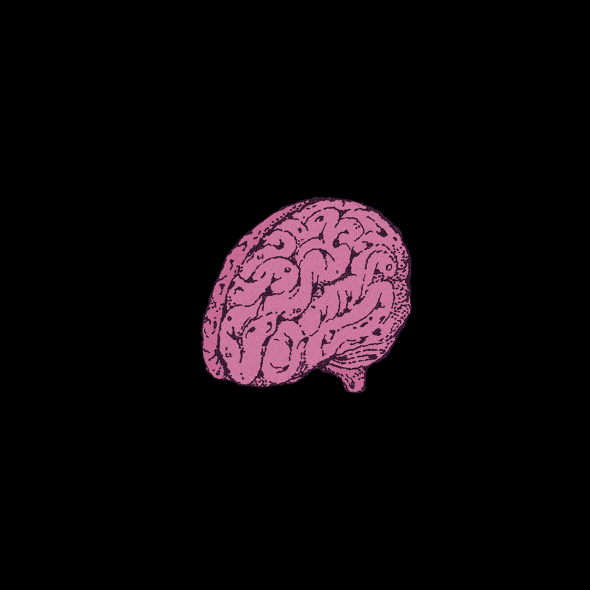
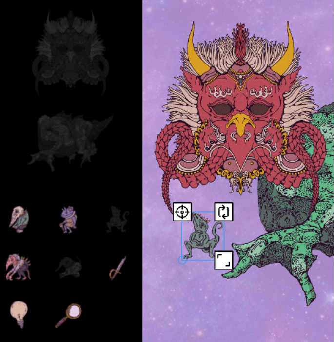
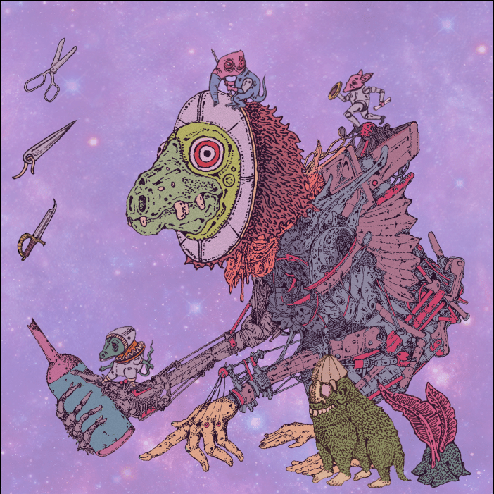
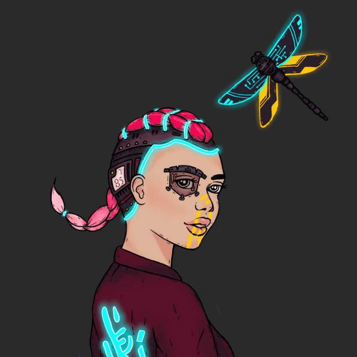

<div class="px-4 py-8">
  <div class="md:container md:mx-auto divide-y-4 divide-yellow-600 divide-dashed pb-20">
    <div class="mb-10 md:mb-20">
      <div class="flex justify-center px-4 pb-6 md:pt-10">
        <div class="flex flex-col justify-center">
          <h1 class="pb-6 text-center text-3xl">Launching October 27th</h1>
          <p class="font-bold text-xl text-center">2:00 PM PST 5:00 PM EST</p>
        </div>
      </div>
      <div class="md:pt-20 grid grid-cols-1 md:grid-cols-11 gap-8 lg:gap-16 mb-8 px-4 md:px-8 lg:px-16 xl:px-32">
        <div class="justify-center md:col-span-6 self-center flex md:order-2"></div>
        <div class="space-y-6 text-left md:col-span-5 self-center md:order-1">
          <h1 class="text-3xl">Step 1: Brain</h1>
          <p>To access the Laboratory, you’ll first need to buy yourself a Goblin Brain.</p>
          <p>Each Goblin Brain contains randomized metadata for corresponding properties, of varying rarity, which
            you can then assemble within the Laboratory.</p>
        </div>
      </div>
      <div class="md:pt-20 grid grid-cols-1 md:grid-cols-11 gap-8 lg:gap-16 mb-8 px-4 md:px-8 lg:px-16 xl:px-32">
        <div class="justify-center md:col-span-6 self-center flex md:order-1 order-1"></div>
        <div class="space-y-6 text-left md:col-span-5 self-center md:order-2 order-1">
          <h1 class="text-3xl">Step 2: Build</h1>
          <p>Once you’ve acquired a Goblin Brain, you’ll want to head on over to the Goblin Laboratory. Here, you
            can behold the contents of your Goblin Brain, and begin assembling your Goblin Experiment using the
            properties inside the brain. </p>
        </div>
      </div>
      <div class="md:pt-20 grid grid-cols-1 md:grid-cols-11 gap-8 lg:gap-16 mb-8 px-4 md:px-8 lg:px-16 xl:px-32">
        <div class="justify-center md:col-span-6 self-center flex md:order-2"></div>
        <div class="space-y-6 text-left md:col-span-5 self-center md:order-1">
          <h1 class="text-3xl">Step 3: Admire</h1>
          <p>Upon assembling your Goblin Experiment, you’ll want to finalize the finished work. In doing so,
            you're converting your original Goblin Brain into a wonderfully beautiful and bizarre one of a kind
            creation. Hold onto your art, it’s yours, and it’s also a mintpass for future projects to come.</p>
        </div>
      </div>
    </div>
    <div class="md:pt-0 pt-10">
      <div class="md:pt-20 grid grid-cols-1 md:grid-cols-11 gap-8 lg:gap-16 mb-8 px-4 md:px-8 lg:px-16 xl:px-32">
        <div class="justify-center md:col-span-6 self-center flex md:order-1"></div>
        <div class="space-y-6 text-left md:col-span-5 self-center md:order-2">
          <h1 class="text-3xl">Step 4: Mintpass</h1>
          <p>Each Goblin Experiment acts as a ticket to future Laboratory projects. Holding a Goblin Experiment
            will allow you to unlock, build, and mint future projects free of charge (minus gas, of course). The
            first free experiment, Sentinels, will be launching in November. </p>
        </div>
      </div>
    </div>
  </div>
</div>